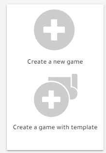
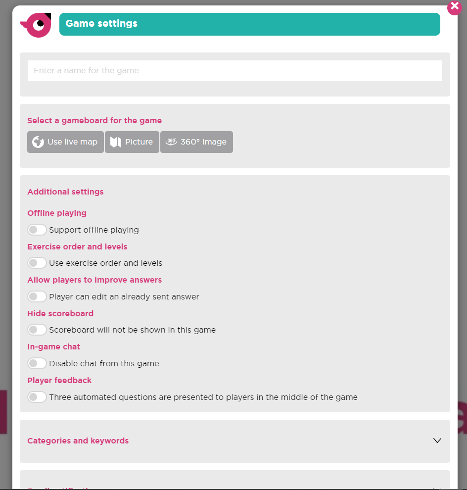
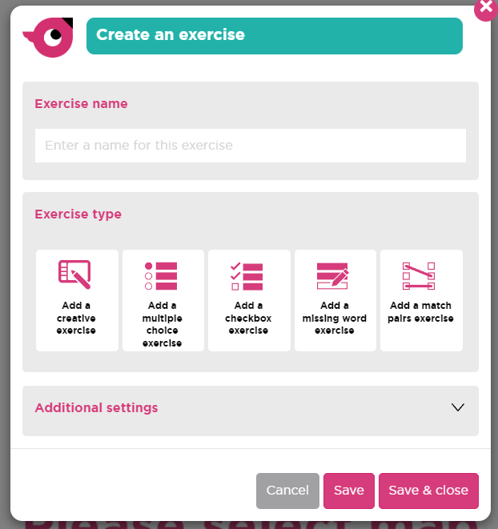
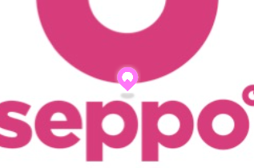

Hoe gebruik ik Seppo? (game)
-

Game aanmaken stap 1
Na uw account aan te maken zou u deze knoppen moeten zien op uw scherm. Klik op een van deze knoppen om een nieuwe Game aan te maken. Voor de tutorial zullen we zonder template starten. -

Game aanmaken stap 2
Bij het aanmaken van een game zou u dit op uw scherm moeten zien. Hier kan u de naam van uw game instellen en indien nodig, de instellingen. Ik ga geen extra uitleg geven over wat elk van deze instellingen doet, omdat seppo dit zelf al heeft toegevoegd. -
Game aanmaken stap 3
Hier kan u verschillende soorten vragen/oefeningen toevoegen. -

Game aanmaken stap 4
Hier kan u de nieuwe oefening een naam geven en kiezen welk type oefening het zal zijn. Na het kiezen van het type zal u de opties krijgen die bij dat type oefening horen. Als u nog eens op een van deze types klikt wordt dat type ook toegevoegd. Als u klaar bent met het aanmaken van deze oefening, kan u op "save & close" drukken. -

Game aanmaken stap 5
Na het opslaan en sluiten van de oefening zou u deze moeten zien verschijnen in het midden van het spelbord. U kan deze verslepen als u deze op een andere plaats wilt hebben. -

Game aanmaken stap 6
Als u op deze knop drukt start het spel. -
Game aanmaken stap 7
Hier kan u de code die de deelnemers nodig hebben kopieëren.